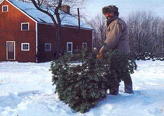
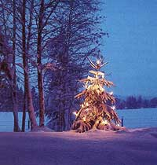
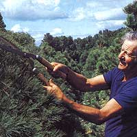
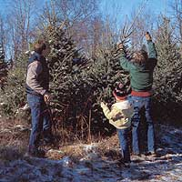

How to Raise
For Fun, profit and maybe even romance
IN APRIL OF 1959, when I bought my first 1, 000 white spruce seedlings from the New York State Conservation Department for $7.50 and planted them on roughly two acres of my parents' small, rocky farm in upstate New York, I thought I was planting trees simply for the inherent good of doing so-providing wildlife habitat, preventing soil erosion, assisting God with reforestation. So innocent was my upbringing in Hurleyville, New York, that I had no notion there was such a thing as the Christmas tree business. For in our town, whoever wanted a Christmas tree simply wandered into the woods and cut one. In those days little private land was posted against trespassing. And neither landowners nor tree-cutting Christians ever dreamed of offering or accepting cash money for one of the slim, six-foot balsam firs or white pines that grew in abundance on the fringes of every marsh.
But a mere decade after my first planting (I subsequently put in another 5,000 spruces, firs and Scotch pines, my 1959 trees had grown to five and seven and even nine feet tall and were starting to shade and crowd one another. My plantation needed thinning. Coincidentally-since by then I had moved into New York City to take a job-I discovered that late each November, hundreds of Christmas tree merchants descended upon the city bearing thousands of evergreens, parking their tractor-trailers along Broadway and bribing the appropriate police precinct, all to street-peddle six-foot Christmas trees to bustling and eager New Yorkers: Trees just like mine, selling for $10 to $15 apiece! I realized I was sitting atop a gold mine.
Nevertheless, totally lacking in merchant's genes, my first marketing pitch amounted only to a timid mention at an office coffee break that I was driving up to my parents' to cut my own Christmas tree. Would anyone else "like one"? I did not dare even mention money. But one gracious soul took the bait. Toni Gerber, a bright and attractive, newly hired editorial assistant, announced she would very much like one of my Scotch pines, although likely something small and tabletop since she was just setting up her own apartment and could not afford to pay more than $to. So grateful was I to have my first paying customer-my only customer in 1969-that I cut a giant, eight-foot tree and sold it to Ms. Gerber for a mere $3.
Not only that, I married her. Which, like most of my adventures in the Christmas tree trade, turned out to be a romantic success but an economic blunder, since I could no longer charge her for a tree.
But from that beginning my marketing skills improved dramatically, and so did my Christmas tree sales, mostly by word of mouth. Savvy New Yorkers were eager to buy my guaranteed-fresh evergreens, off the stump only a day or two, rather than buy from the large-scale street peddlers, many of whose trees are cut three weeks or more before being hauled into the city. Throughout the 1970s my sales more or less doubled every year up to the point where I simply had more customers than trees I wanted to sell.
So potentially lucrative is the Christmas tree business that other high-profit rural enterprises-raising chinchillas, for example, or selling mail-order shoes-pale by comparison. Consider that, using the standard evergreen planting configuration (placing seedlings six feet apart in every direction, roughly 1,100 trees can be grown on a single acre of good ground for a crop worth, at today's retail prices, somewhere in the vicinity of $45,000!
TODAY, AT LEAST 12 SPECIES of pines, spruces and firs are sold as Christmas trees in the United States, ranging from such standards as the balsam fir to the more exotic and expensive blue spruce. And, with some significant exceptions, just about any Christmas evergreen can be grown just about anywhere, from New England to the West Coast. In general, pines are the most susceptible to disease and require the most pruning to shape them into full, salable trees, but once cut, they tend to hold their needles better than spruces or firs. Spruces shed most readily, especially in hot, dry living rooms, but are hardy-growing trees that require little maintenance. Firs are somewhere in between; their main shortcoming is that deer like to nibble them.
Ask your state department of environmental conservation or your county agricultural agent to recommend the best species for your soil and climate. Also, determine which species you like best. I was once persuaded to plant Scotch pine since, at the moment, they were said to be the hottest-selling trees in New York. But after planting I realized I did not have the passion for this species that I did for firs and spruces: Their chubby bodies did not fit my notion of the traditional Christmas tree shape (plus, they're not a native American species. And, lacking the passion, I couldn't bring myself to recommend them to my customers (the only one I ever sold was to Ms. Gerber, nor to prune them. Thus they grew up gnarled and bent and crowded together and now occupy an ugly acre behind the house.
EVERGREEN SEEDLINGS, which are two years old and about eight to to inches tall when you plant them, are commonly sold in lots of 1,000 (call your state Christmas tree association for a list of suppliers). But you can usually get as few as 50o. These days, the seedlings go for anywhere from $8o per thousand for Scotch pine to $150 per thousand for blue spruce (by the way, only about 35% of the blue spruce seedlings you purchase will ever be truly "blue").
If you're like most first-time seedling buyers, you'll be persuaded the seller has either forgotten or intentionally lopped off part of your order when you see the amazingly small bundles into which 1,000 tiny trees can be fit. But after you've planted your first 50 or too trees using a mattock-a simple, pick-like hand tool-you'll be convinced the seller has given you too many. To plant, slash the mattock's blade six inches into the ground, lever up a three-sided piece of sod, stick a tree in the hole, let the sod drop back into place and firm it with your heel. Take two paces (six feet and repeat the process. Carry your seedlings-75 or so at a time-in a 10-quart bucket with four inches of water in the bottom to wet the trees' roots. Plant the trees in more or less straight lines-but not in perfectly straight lines, because then your plantation will look perfectly man-made, non-natural. Working alone you can plant Goo to 1,000 seedlings in a 12-hour day; with a partner you can plant more than twice as many.
There are evergreen growers who use herbicides to kill competing grass, who even fertilize. Of course, this may cause pollution and can even harm relatively delicate species. But I've usually stuck with rugged species, native to my region, and have planted them in both wet and dry soils, in open fields, among rocks, in brush, even under the shadow of mature hardwoods. Yes, my unfertilized, shaded trees grow far, far slower than those out in open sunlight; but who, except advocates of the assembly line, wants all the trees to grow at precisely the same pace?
Lazy Pruning
UNTIL YOUR SEEDLINGS have been in the ground three or four years, do nothing but watch them grow. Then, when they reach thigh-or waist-height, prune them. Typically, an evergreen of this height will have a 15-inch-long spire or "leader" on top, which should be nipped back to eight or 10 inches with clippers or hedge shears. Also, the tips of each whorl of branches around the trunk should be trimmed back. What this does-since you are cutting off all leading or terminal buds-is divert the tree's hormonal energy away from heavenward growth and cause it to bush out and become fuller instead.
Pruning is done once a year, in June or July: Cutting away half the year's growth will insure the full conical shape consumers like to see in their living room. To me, the Christmas tree industry has done at least an aesthetic disservice to the public by falsely fattening the world's evergreens because all the heavy, thickly-branched, crewcut firs and spruces we see these days in Christmas tree lots from San Diego to Bar Harbor, Maine, bear no resemblance whatsoever to the slim and conical contour of most evergreens growing in the wild.
If, as sometimes happens, the needles of a few or a fieldful of ready-to-harvest trees turn pale green or yellow, growers may spray chemical compounds on the trees in late summer to hide the defect and "restore" the natural dark-green color. "Consumers demand a lush, green tree," says Jeanne Weiss, assistant director of public relations for the National Christmas Tree Association. "So some growers resort to a latex-based tint that also inhibits moisture loss." However, this practice is less common than in previous years, because poorly colored trees are simply harvested and replaced with more appropriate species.
Another issue for Christmas tree growers is the clear-cutting of all marketable trees. Since trees grow unevenly, one practice is to cut taller, grown trees to be replaced with seedlings-but growers have been known to clearcut an entire year's crop. A far better practice, perhaps, is to permit a certain proportion of your trees to mature and grow forever.
YOU WILL KNOW that your trees have reached acceptable market dimensions and appearance once your neighbors start stealing them, driving their trucks and off-road vehicles right up on your premises and leaving you with an empty stump. There are several fun ways of discouraging theft. But the absolutely best way is to sell your current year's crop of Christmas trees before the thieves get to them.
There are four ways to sell. You can sell to a broker who will then resell them at retail. You are spared all marketing worries and have cash in hand. But the cash you have in hand will only be about one-third of the trees' full value.
Or you can cut as many trees as you think you can sell-say, 500-load them onto a truck and cart them to a local shopping center or the nearest big city and sell them yourself. This way, though, you are imprisoned in the role of street peddler, shuffling about in the cold on concrete for a solid month before Christmas, constantly rebundling your trees on display and haggling all day with people who may not know a Douglas fir from a tamarack. For earning potential, this is the riskiest proposition.
I've used two methods to sell. One is to have customers come to my place in summer, tag the tree they want (and pay then and return in December to cut it themselves and cart it away. It's an outing, and it's immensely popular among urbanites, who will drive vast distances to do this. I take rather fondly to these customers because they are willing to walk at least a few feet into the woods and employ a saw or an ax.
But, even today, my main method of selling evergreens, one I seem to have fallen into over the years after my first sale to Ms. Gerber, is an urban, custom-order Christmas tree business. People, mostly friends and neighbors, phone us in late November, describe exactly what size and shape tree they want, then trust my judgment to bring back just what they've ordered, for an agreed-upon price. Since he's fallen off his diet again and gained 40 pounds, Alan Cohen informs me, he wants a fat tree this year, fatter than he is. And, as always, Judy Prince wants an eight-footer, noticeably taller than she, at six-feet-two.
I then go upstate, wander neurotically about the place for hours deciding which is the best tree for Rolly, for Toni and me, for Elaine and Pablo, before making a single slice with my handsaw. I finally cut and haul the trees back to the house-usually alone, sometimes with my mother's help-bundle them up and drive them back to the city. There, I store them in the cold courtyard of our building, give them something to drink and wait for my repeat customers to come pick them up.
This is an absurd way of doing business. Dragging and carrying the 40-pound trees back to the house is hard work. If there's been an ice storm I have to thaw out the evergreens in the house before bundling them, which invariably floods the kitchen. And since I insist on tying the individual trees with cord (instead of using the popular but ecologically unfriendly plastic tree bags, by the time fm through my hands and forearms have more pricks from sharp needles than a heroin addict's. For years I rented a truck or van for transport but lately I've been borrowing my mother-in-law Miriam's Oldsmobile or our friend Estelle's Chevrolet. This automatically limits the number of orders I can take to the number of five- to 12-foot trees that can be crammed into and tied atop a passenger car (19 for the Olds, 16 for the Chevy). Drivers stare at me as my mass of greenery crawls along the highway.
And I love it. First, because I get the chance to wander our 25 acres and visit the trees I've planted over the years, including some, I'm proud to say, that are now lovely, stately creatures-60 feet tall with trunks 18 inches thick. Furthermore, when I arrive in the lobby of our apartment building with my load of wonderful, fine-smelling trees-wearing my tattered logger's shirt, bucksaw in hand and a stubble of beard on my face, my hands a mass of lacerations-I create a sensation. People ask where I got the trees. They ask if I have any leftovers and if they can buy one next year. And they wonder-I like to believe-if this is the same mild-mannered fellow who, the rest of the year, merely pecks away at a typewriter. I am Woodsman-For-A-Day.
Finally, by selling to the same faithful year after year, all of whom know I see my trees as offspring, I even get to share a bit in the spirit of their Christmases. Often fm invited over to share hot cider and see my "children" all decked out in their holiday finery.
This is how I conduct my Christmas tree business. If you follow my methods, you will likely not realize your peak earning potential. But you will still have a very merry Christmas:
|
 PERHAPS MOST BEAUTIFUL: AN UNHARVESTED CHRISTMAS TREE. |
 CHRISTMAS IN JULY: EARLY SUMMER PRUNING. |
 CUTTING TOUR OWN TREE CAN BE A FAMILY AFFAIR. |
|
 |
|
|